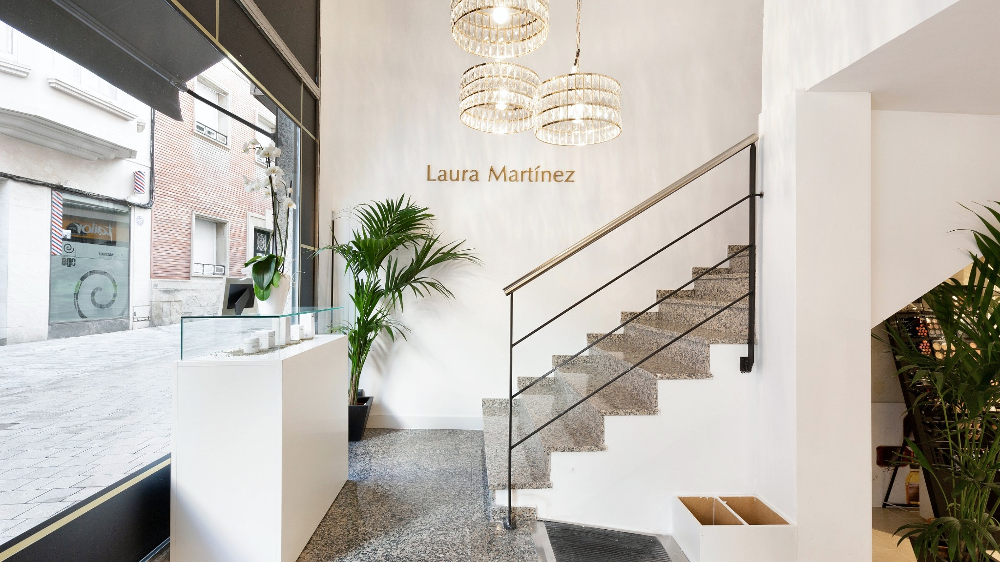
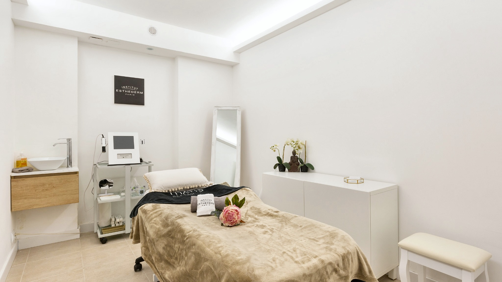
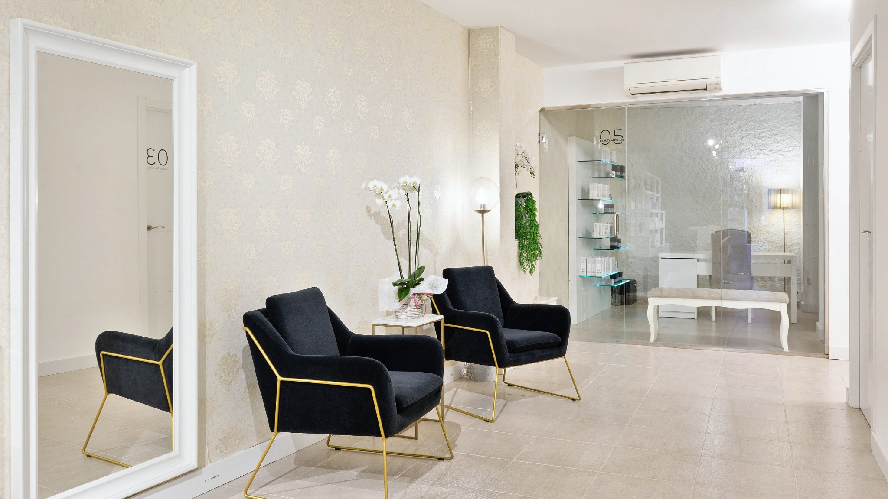
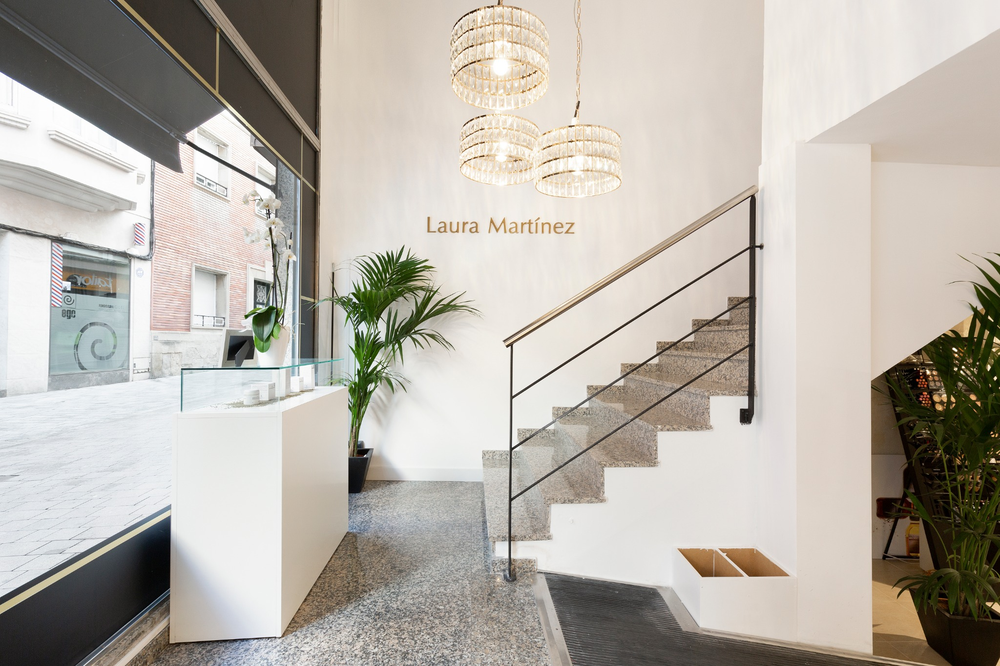
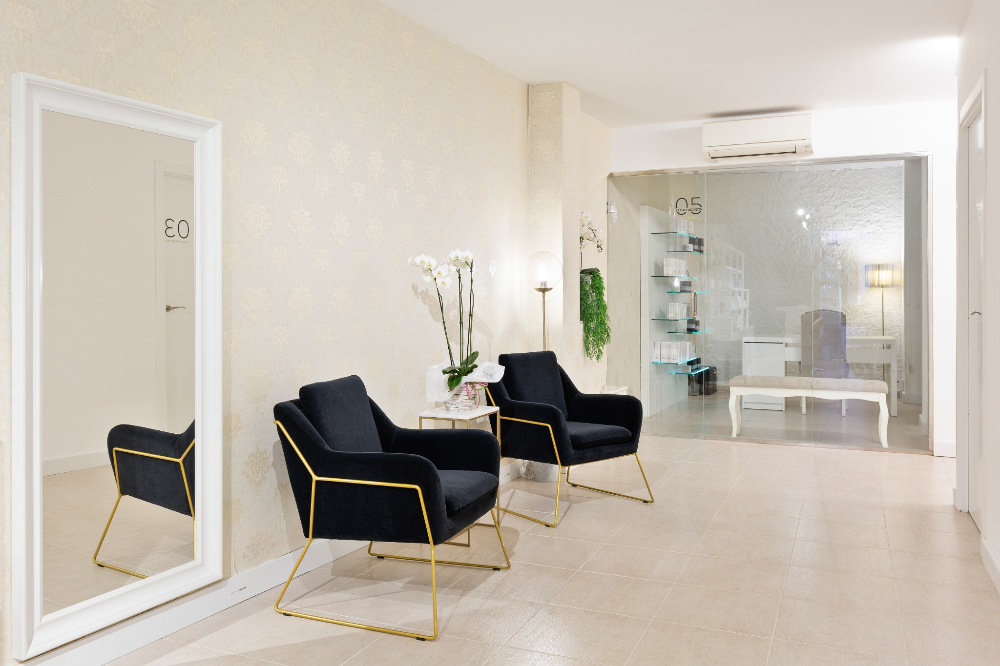

Facial
Rejuvenation, radiance, firmness and skin quality.
→Because when you feel eternal, the world sees you as infinite.
DISCOVER MORE →Beauty is not standardized. It is observed, understood and treated personally.
At Centres Laura Martínez we combine experience, diagnosis and technology to create protocols adapted to each person. A way of understanding aesthetics based on precision, natural results and rigor.
Technology is a tool. Diagnosis and professional judgement determine how it is used.






Laura Martínez leads a centre that has become a reference for advanced aesthetics in Granollers. Continuous education, excellence and truly personal attention define her way of working.
“La excelencia está en observar, escuchar y encontrar lo que cada persona realmente necesita.”
He notado cambios muy importantes. Mi piel se ve mucho más luminosa.Cliente · Granollers
Estoy encantada con la atención y con cómo han personalizado mi tratamiento.Cliente · Barcelona
Profesionalidad, confianza y una experiencia totalmente diferente.Cliente · Vallès Oriental
C/ de les Travesseres 21-23
08401 Granollers, Barcelona
laura@centreslauramartinez.com
93 870 56 74
663 900 609 · 640 65 71 40
Monday 16:00–20:00
Tuesday–Friday 09:00–20:00
Saturday 09:00–13:00